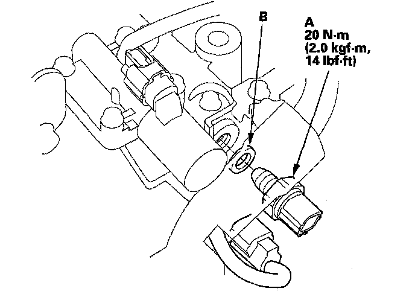

4th Clutch Transmission Fluid Pressure Switch Replacement
4th Clutch Transmission Fluid Pressure Switch Replacement1. Make sure you have the anti-theft codes for the audio system and the navigation system (if equipped).
2. Disconnect the negative terminal from the battery, then disconnect the positive terminal.
3. Remove the battery hold-down bracket, and remove the battery cover, battery, and battery tray.
4. Remove the under-hood subfuse box from its bracket, and remove the bracket from the battery base.
5. Remove the intake air duct and air cleaner housing.
6. Remove the battery base and battery base bracket.
7. Disconnect the 4th clutch transmission fluid pressure switch connector, and remove the switch.

8. Install the new 4th clutch transmission fluid pressure switch (A) and a new sealing washer (B) and tighten the switch.
9. Make sure there is no water, oil, dust, or foreign particles inside the connector.
10. Connect the connector securely.
11. Install the battery base bracket and battery base.
12. Install the air cleaner housing and intake air duct.
13. Install the under-hood subfuse box on the battery base, and install the subfuse box on its bracket.
14. Install the battery tray, battery, battery cover, and battery hold-down bracket, then connect battery terminals.
15. Enter the anti-theft codes for the audio system and the navigation system (if equipped). Set the clock.
16. Do the steering column position memorization.
17. Do the power window control unit reset procedure.